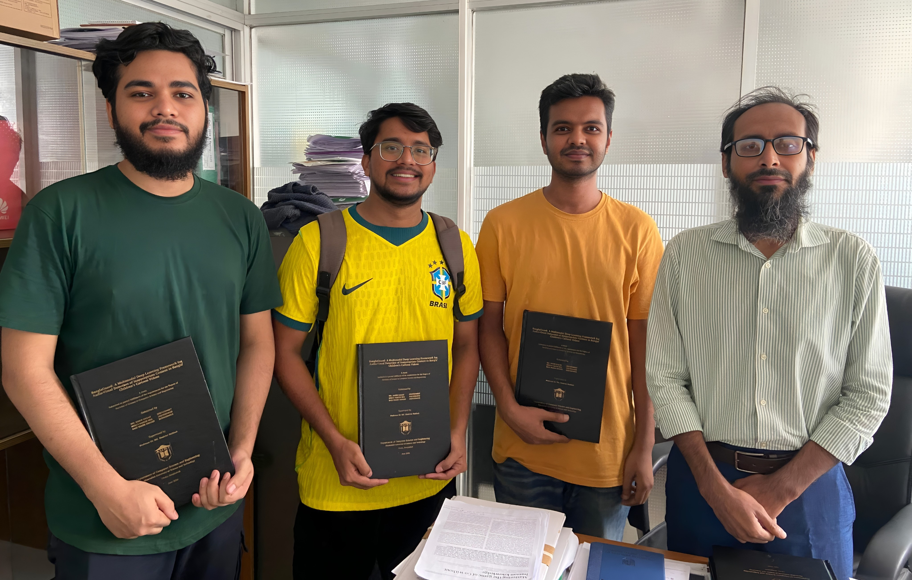

About
Hi, I'm Mirza Naeem Beg. 👋
I'm in my final year of Computer Science & Engineering at Ahsanullah University of Science and Technology (AUST) in Dhaka, Bangladesh, and expected to graduate in July 2026.
I like problems where language, vision, and data meet. My research interests are NLP, computer vision, LLMs, and deep learning, with a particular focus on AI for healthcare and low-resource language processing, especially Bangla, a language millions speak that still lacks good tools. Day to day I work mostly in Python with PyTorch, SQL, pandas, and other libraries and frameworks.
The plan I'm working toward is simple. I'd happily start in just about any fresher-level Data or AI role, grow into Data Engineering along the way, and work toward what I really want in the end: becoming a Data Scientist or AI Engineer.
I've learned most of these skills through my thesis and course projects, and keep studying on my own. I'm doing professional, skill-based courses aligned with my research interests and career goals on Coursera and other online platforms, so I can keep improving my skills and pick up new ones.
Right now I'm looking for a full-time, fresher-level Data or AI role, and open to remote or on-site work in Dhaka. If that sounds like a fit, my inbox is always open.
Undergraduate Thesis: BanglaGuard

A Multimodal Deep Learning Framework for Audio-Visual Detection of Inappropriate Content in Bangla Children's Cartoon Videos, supervised by Prof. Dr. Md. Shahriar Mahbub.
- EfficientNet-based CNNs for visual feature extraction.
- BiLSTM for temporal modeling.
- Spectrogram-based CNN for Bangla audio classification.
- Achieves 87.02% accuracy on a purpose-built 871-clip dataset.
- Submitted as undergraduate thesis; under review for conference publication.
I always seek the kind consideration, blessings, and goodwill of each and every one of you. May Allah bless you all. 😊